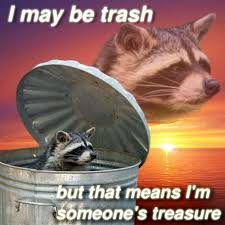

HELLO!!! :3
The FitnessGram™ Pacer Test is a multistage aerobic capacity test that progressively gets more difficult as it continues. The 20 meter pacer test will begin in 30 seconds. Line up at the start. The running speed starts slowly, but gets faster each minute after you hear this signal. [beep] A single lap should be completed each time you hear this sound. [ding] Remember to run in a straight line, and run as long as possible. The second time you fail to complete a lap before the sound, your test is over. The test will begin on the word start. On your mark, get ready, start.
Everyone knows Mario is cool as f--k. But who knows what he's thinking? Who knows why he crushes turtles? And why do we think about him as fondly as we think of the mystical (nonexistent?) Dr Pepper? Perchance. I believe it was Kant who said "Experience without theory is blind, but theory without experience is mere intellectual play." Mario exhibits experience by crushing turts all day, but he exhibits theory by stating "Lets-a go!" Keep it up, baby! When Mario leaves his place of safety to stomp a turty, he knows that he may Die. And yet, for a man who can purchase lives with money, a life becomes a mere store of value. A tax that can be paid for, much as a rich man feels any law with a fine is a price. We think of Mario as a hero,but he is simply a one percenter of a more privileged variety. The lifekind. Perchance.